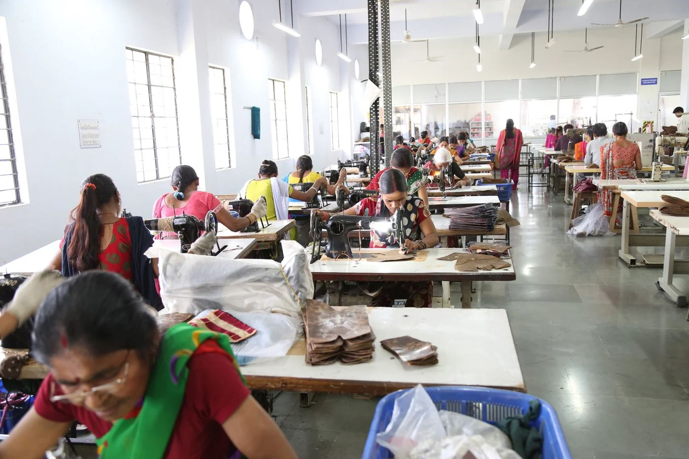

Good for the planet, and for the people who make it.
We run our tannery and factory to the highest standards. We are Leather Working Group Gold and ISO 9001 certified.

How we look after the environment
Alongside our certifications, our CSR work supports these projects across the tannery and factory campus.
Effluent treatment plants
We use only approved products in the tanning process, and our effluent treatment plants make sure the water we use is treated effectively.
Our gardens
Our tannery and factory have a large green area, and every visitor plants a sapling in our gardens.
Food forest & organic farming
Part of our tannery and factory campus is a food forest where we grow organic produce.
Renewable & natural energy
Our own solar panels help power the site. We cut energy use wherever we can, for example by air-drying and sun-drying our leathers.

The people who make it happen
Our factory exists because of the people who make it happen every day, from working the leather to crafting the shoes and bags to keeping the chai flowing. This is how we support them.
Scholarships
We pay school fees for some of our employees' children, and each year we aim to support more families.
Fresh canteen lunch
Subsidised meals cooked with produce from our own farming and food forest.
Our certifications

Leather Working Group: Gold
Leather manufacturer audit PRA103. Covers environmental performance, chemical management and worker welfare.

ISO 9001:2015
Certified quality management across the tannery and factory.
Our standards
- Chemicals
- Every hide we process is free from banned chemicals.
- Drying
- We air dry our leathers to keep machine and chemical use down.
- Consistency
- Every batch is checked for colour, feel and quality, with Italian technicians on our tannery team.
- Materials
- Genuine leather only, never synthetics.